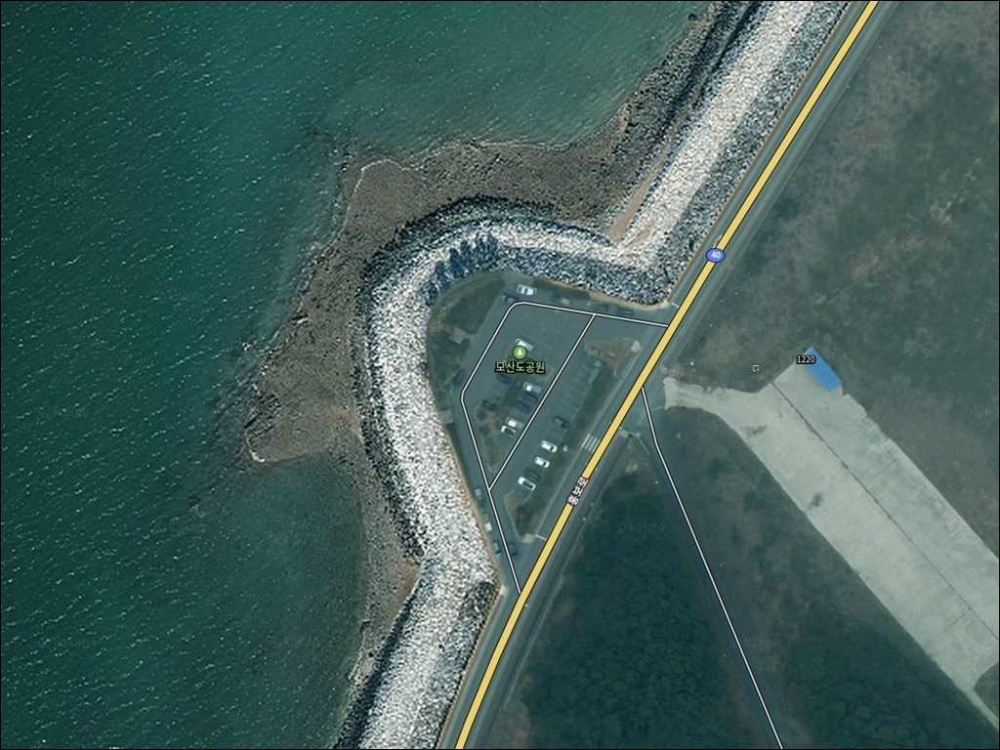
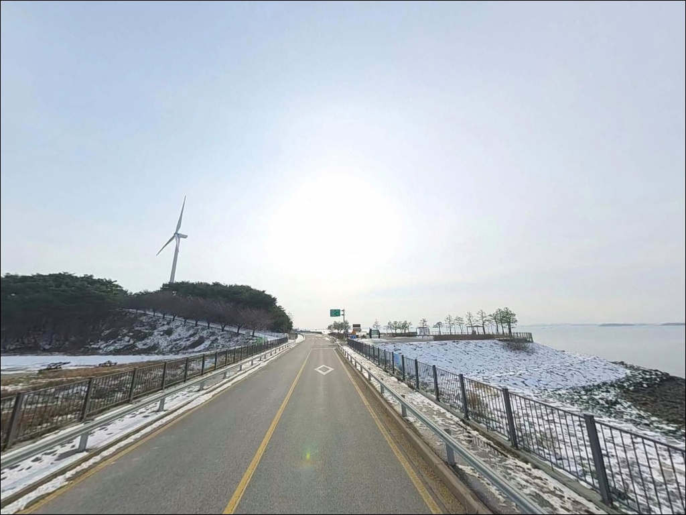
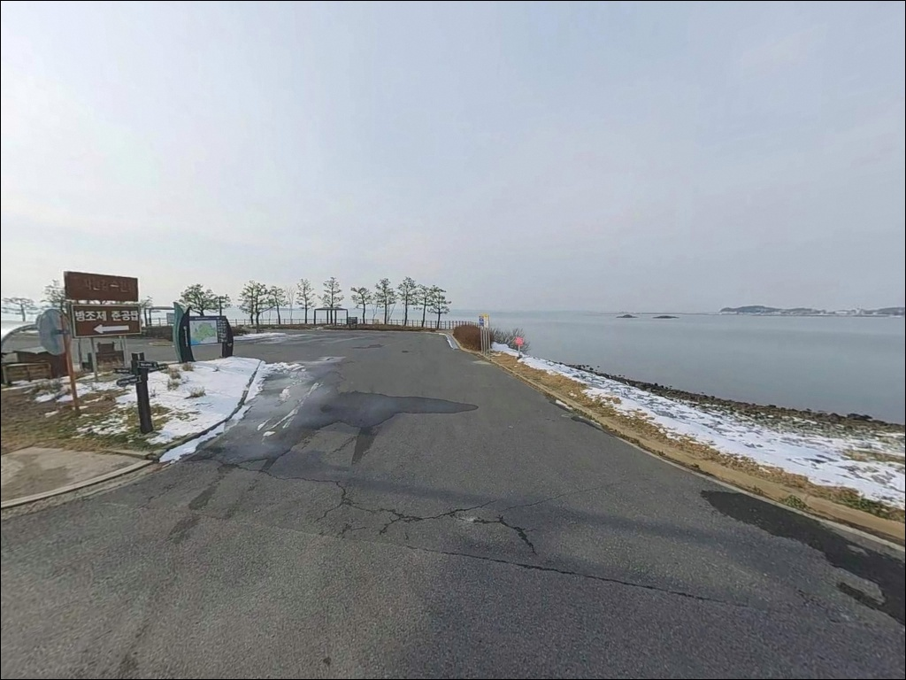
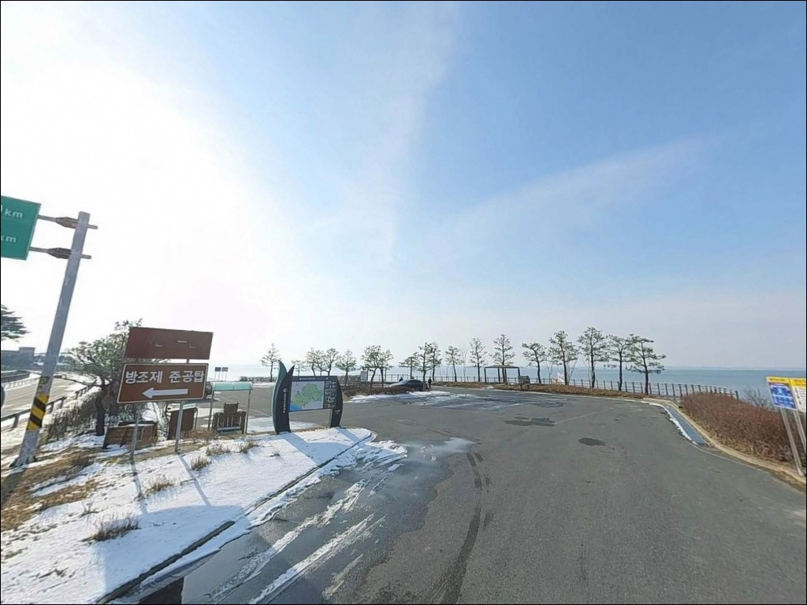
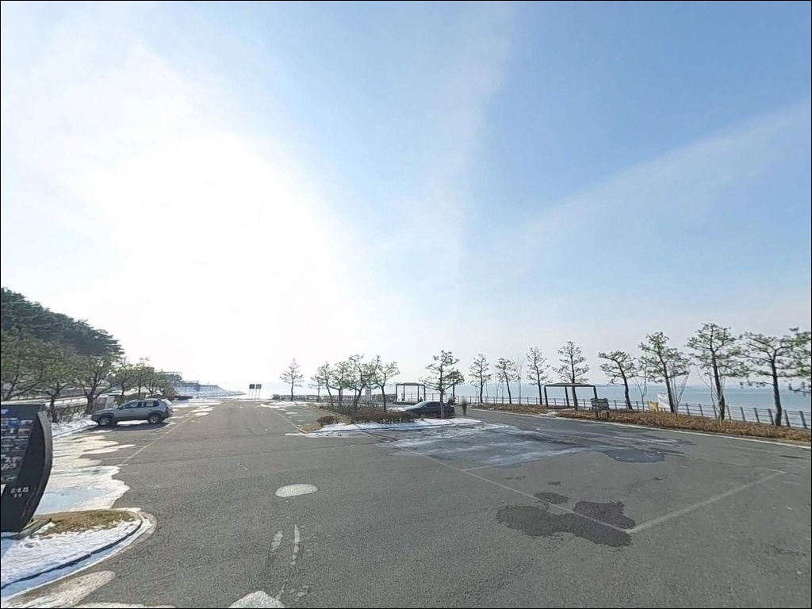
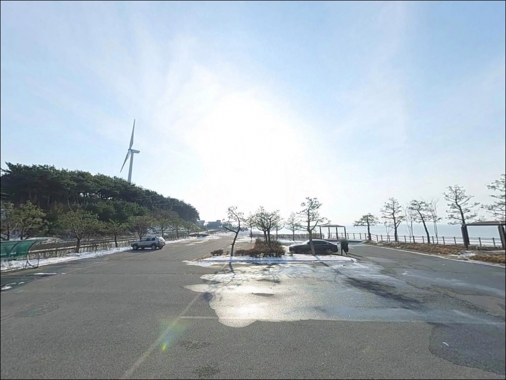
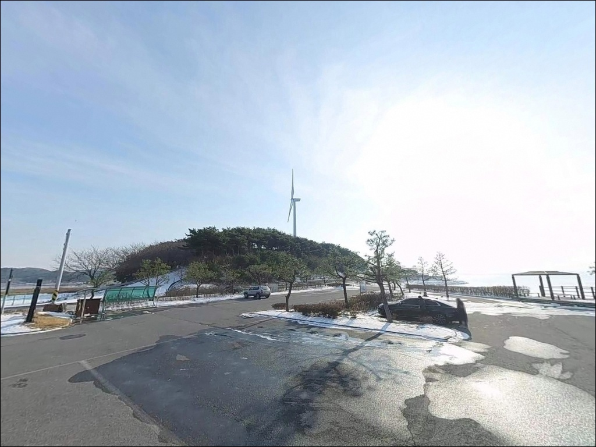
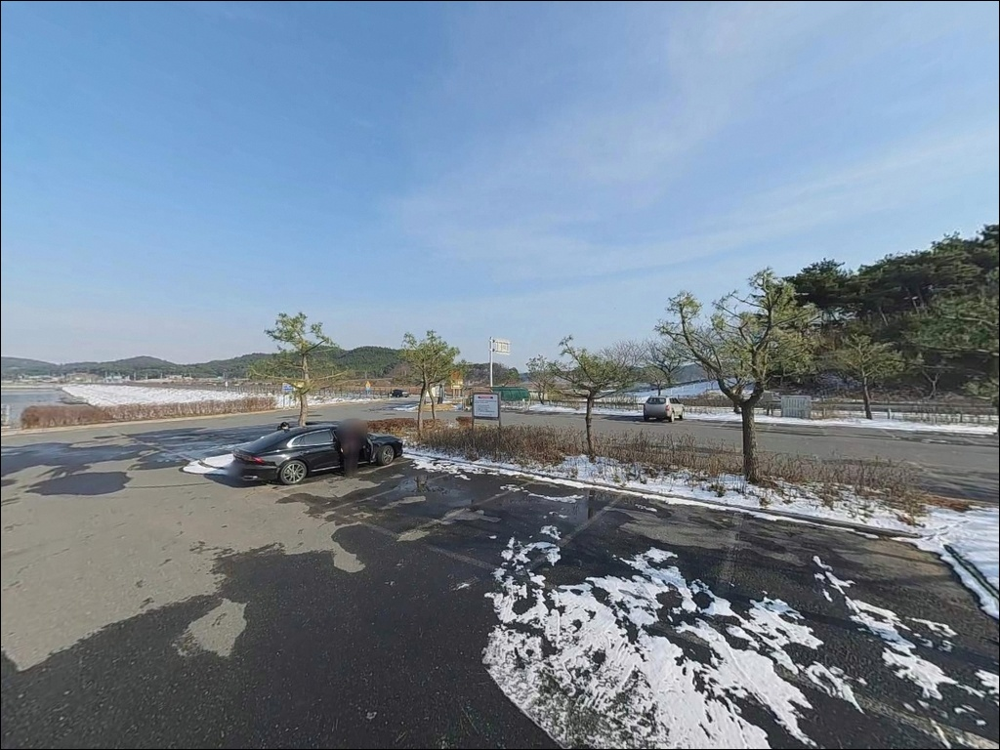
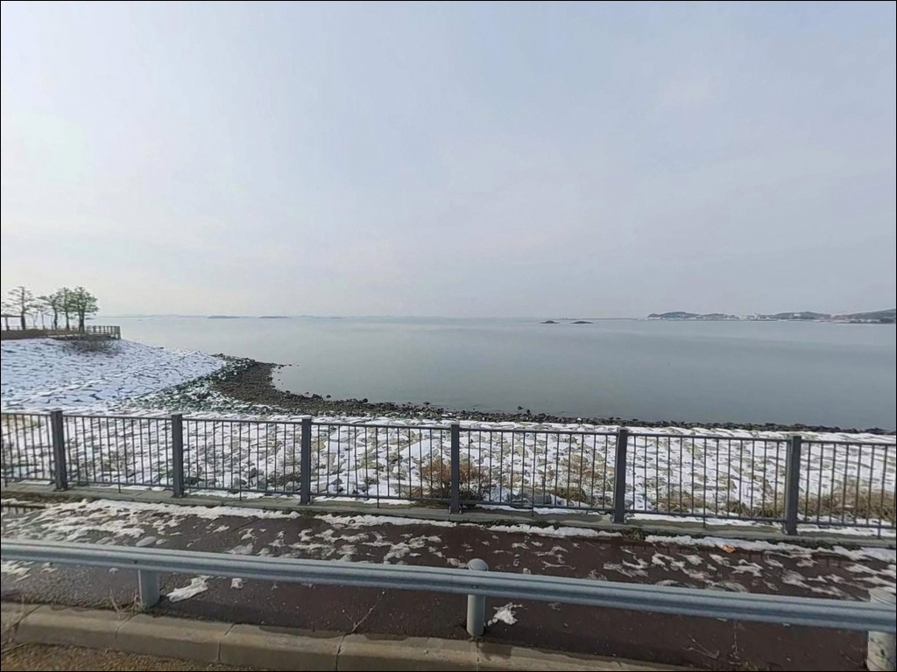

모산도공원, 충남 홍성군 여유로운 차박, 낚시 장소
이 페이지에는 광고(제휴 링크 포함)가 있으며, 광고 링크를 통해 구매하면 운영자가 판매 수익 또는 수수료를 받을 수 있습니다. 포인트 사진: 카카오맵 스카이뷰·로드뷰. 이 페이지의 지도·사진 이미지는 카카오맵의 실제 서비스 이미지와 다를 수 있습니다.


포인트 안내
모산도공원
충남 홍성군 서부면 신리 654
천수만 물때를 확인하지 않고
모산도공원에 도착하면,
낚싯대를 펼 자리 자체가 사라지는 상황을 맞습니다.
서해 간만차가 극단적으로 큰 이 일대는
간조 때 갯벌이 넓게 드러나
외해 방향 공략이 사실상 불가능해지는 구조입니다.
충남 홍성군 서부면 신리,
홍성보령방조제(연장 1,856m)로 육지와 이어진
이 공원은 원래 '모섬'이라 불리던 섬이
방조제 건설로 연륙된 지형입니다.
공원 남쪽으로 갯바위가 이어지는 해안선은
천수만 외해와 직접 면하고 있어
워킹 에깅과 원투낚시 모두 시도해볼 수 있는 구조입니다.
이 글은 모산도공원의
지형 구조와 낚시 접근 조건,
진입 환경과 차박 체류 여건에 집중합니다.
조황 단정이나 특정 어종 보장은
이 글의 범위에 포함되지 않습니다.

1. 진입 동선과 주차 여건
모산도공원은 40번 국도에서 직접 연결되는
진입로를 통해 접근하는 구조입니다.
포장도로가 공원 내부까지 이어져 있어
승용차와 소형 SUV 기준으로
진입 자체에 큰 어려움이 없는 편입니다.
공원 언덕 위까지 포장도로가 연결되어 있어
낚시 장비를 싣고 접근해도 무리 없는 수준입니다.
주차 공간은 공원 내 무료 주차장이 조성되어 있습니다.
방조제 준공탑 인근과 해변 쪽 구역에
각각 주차 공간이 나뉘어 있으며,
여러 대가 동시에 주차·회차할 수 있는
넓은 공간이 확보된 구조로 확인됩니다.
갯바위나 방조제 석축으로 이동하는 동선은
주차 후 도보로 이어지는 형태입니다.

2. 차박 환경과 야간 체류 조건
민가 밀집도가 낮은 방조제 인근 공원이라
야간에는 차량 통행이 거의 없는 편이며,
프라이버시 면에서는 비교적 여유 있는 환경입니다.
공원 전망대에서 남당항과 인근 항구 불빛,
풍력발전기 조명이 보이는 구조라
야간에도 어느 정도 시인성이 확보됩니다.
다만 갯바위와 석축 구간은 가로등이 없어
개인 조명 장비는 필수입니다.
2024년 9월 주차장법 개정 이후
홍성군 해안 공원 주차장에서의
야영·취사는 금지 적용 대상이 되었습니다.
단순 차 안 체류에 대해서는
홍성군이 "추이를 지켜볼 것"이라는 입장이므로
방문 전 현장 안내판을 먼저 확인하는 것이 기본입니다.
공원 화장실은 겨울철 동파 방지로 폐쇄됩니다.
서해 방조제 지형 특성상
서풍 계열 기상 시 천수만 외해에서 오는
바람 영향을 직접 받을 수 있습니다.
기상 예보를 확인한 뒤 체류 여부를 판단하는 것이
이 포인트에서 안전한 차박의 기본 조건입니다.


3. 주변 인프라와 편의시설 현황
모산도공원 반경 3km 이내에서
편의점·마트·식당 등 즉시 이용 가능한
확정된 편의시설 정보는 확인되지 않습니다.
식수, 얼음, 낚시 소품, 연료 모두
출발 전에 갖추고 진입하는 것이 현실적입니다.
반경 약 3.5km 북쪽의 남당항에는
수산물 식당 다수와 대형 주차 시설이 확인됩니다.
남당항 방면으로 이동하면
기본 생활 인프라 대부분을 해결할 수 있어
모산도공원 방문 전후 동선에 함께 묶기 좋은 거점입니다.
공원 자체는 홍성보령방조제 준공 기념으로 조성된
전망형 공원으로 벤치·팔각정·전망대가 있습니다.
전망대에서는 서해와 안면도, 남당항 방면을
한눈에 조망할 수 있어
낚시 자리를 고르기 전
지형 파악 용도로 먼저 활용하기 좋은 구조입니다.

4. 출조 전 반드시 챙겨야 할 준비사항
이 포인트에서 물때 확인은 단순 권고 사항이 아닙니다.
천수만 일대의 조수 간만차는 극단적으로 크며,
간조 시 갯벌이 넓게 드러나
낚시 가능 구간 자체가 없어지는 구조입니다.
바다타임에서 홍성 서부면 기준 물때를 확인하고
만조 전후 2~3시간을 타이밍으로 잡는 것이
이 포인트 공략의 출발점입니다.
홍성호 배수갑문이 공원 인근에 위치합니다.
배수갑문 방류 여부에 따라 주변 조류 흐름이 달라지고
조황에도 영향을 미치는 구조입니다.
농촌용수종합정보시스템에서 홍성호 방류 일정을 확인하고
방류 타이밍을 미리 파악하는 것이
이 포인트를 제대로 운용하는 조건입니다.
갯바위와 석축 구간은 미끄러운 편이므로
미끄럼 방지 신발은 기본입니다.
구명조끼는 방조제 석축과 갯바위 이동 시 착용하며,
천수만 외해 방향은 서풍 계열 강풍 시
파도 영향을 직접 받는 구조이므로
기상청 해상예보를 출발 당일 아침 다시 확인하는 것이 안전합니다.

5. 서해 갯바위에서 물때를 놓치면
낚시 자리가 사라지는 이유
모산도공원 지형의 핵심은
구 섬 지형이 방조제로 연결된 육계도 구조에 있습니다.
공원 서쪽과 남쪽은 천수만 외해에 직접 면해 있고,
동쪽은 홍성방조제로 막힌 홍성호 방향입니다.
이 두 방향이 만들어내는 조류 흐름의 차이가
자리 선정의 핵심 변수가 됩니다.
공원 남쪽 갯바위 일대는
천수만 외해 방향으로 열려 있는 구조입니다.
만조 타이밍에 수면이 갯바위를 덮기 시작하면
에기 채비를 탐색하기 좋은 지형 조건이 갖춰집니다.
방조제 석축 구간은 배수갑문 인근이
조류 흐름이 생기는 구간으로 상대적으로 수심 확보에 유리합니다.
바닥은 석축과 뻘이 혼재하는 서해 전형적인 지형이라
밑걸림이 발생하는 구간도 포함됩니다.
채비 손실을 감안해 여분을 넉넉히 준비하는 편이 좋습니다.
이 포인트의 최신 조황은 출조 전
"홍성 방조제 낚시"나 "모산도 갑오징어" 키워드로
꼭 검색해 보시기 바랍니다.


6. 이 지형에 어울리는 낚시 스타일
갑오징어·쭈꾸미 에깅이 이 포인트에서
가장 잘 알려진 낚시 방식입니다.
공원 남쪽 갯바위를 따라 워킹하며
천수만 외해 방향으로 에기를 던지는 방식으로,
가을 시즌 만조 전후 집중 탐색이
이 지형 구조와 가장 잘 맞는 운용 방식입니다.
원투낚시도 방조제 석축 구간에서 시도해볼 수 있습니다.
서해 내만형 지형에서 기대해볼 수 있는
망둥어·붕장어를 대상으로
채비를 멀리 보낸 뒤 바닥을 천천히 끌어오는 방식이
이 구조 조건과 맞습니다.
정조 전후 타이밍에 집중하는 것이 기본입니다.
소형 지그헤드를 활용한 루어낚시도
석축과 뻘 경계 구간 탐색에 어울립니다.
우럭·노래미 계열이 이 지형에서
기대해볼 수 있는 어종입니다.
에깅 탐색 구간에서 반응이 없을 때
루어를 병행 운용하는 방식이
타이밍 효율을 높이는 방법입니다.

7. 대안 포인트와 플랜 B 동선
모산도공원 낚시 여건이 기대에 못 미치거나
물때 타이밍이 맞지 않을 때는
남당항 방파제가 첫 번째 대안입니다.
공원 북쪽 약 3.5km 거리에 위치하며,
방파제 외항 쪽 등대 인근이
원투·루어 모두 가능한 구조로 알려져 있습니다.
처음 이 일대를 방문한다면
남당항을 기점으로 잡고
모산도공원을 서브 포인트로 돌아보는 동선이 효율적입니다.
수룡항 포구도 모산도공원과 인접한 대안입니다.
공원에서 가까운 소형 어항으로,
낚시인들에게 어느 정도 알려진 포구입니다.
모산도공원 갯바위 접근이 여의치 않을 때
수룡항 포구 인근 구간을 병행 탐색하는 동선이
이 일대를 가장 효율적으로 활용하는 방식입니다.
차박 거점 이동이 필요할 때는
어사리 노을공원(약 5km)이 대안입니다.
홍성군이 차박 가능 공원으로 공식 언급한 장소로
24시간 개방이 확인됩니다.
남당 노을전망대(약 4km)도
주차 가능 공간이 확인된 대안 거점입니다.

물때와 배수갑문,
이 두 가지가 모산도공원 낚시의 기준입니다
워킹 에깅이나 원투낚시를 즐기는 낚시인이라면
모산도공원의 지형 조건은 탐색해볼 만한 구조입니다.
갯바위 남쪽 구간, 방조제 석축, 배수갑문 인근까지
낚시 스타일에 따라 자리를 달리 잡을 수 있으며,
온라인 정보가 많지 않은 만큼
직접 발품을 팔아야 하는 탐색형 포인트입니다.
반면 물때 계산 없이 도착하거나
야영·취사 규정을 확인하지 않고 체류하면
낚시 자리와 차박 여건 모두
기대와 다른 상황을 맞을 수 있습니다.
물때 확인, 배수갑문 방류 일정 파악, 현장 규정 확인,
이 세 가지를 갖추고 간다면
가을 에깅 시즌에 기억에 남는 포인트가 될 수 있는 곳입니다.
낚시를 마치고 넓은 주차 공간에 차를 세운 채
천수만 노을을 바라보며 하룻밤 머무는 여정을 원하는 낚시인이라면,
현장 규정을 먼저 확인한 뒤
낚시와 차박을 함께 즐겨보시기 바랍니다.